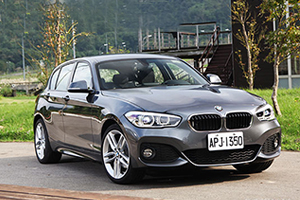
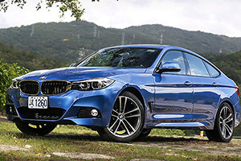

2 Series Active Tourer如果熱賣了，骨灰級Bimmer在意嗎？又或者這世界上已經沒有純粹的Bimmer了，因為BMW都不純粹了。
這次我就直切主題，在這趟試駕2 Series Gran Tourer的過程中，我實在很不想承認BMW也能將前驅車調校至如此境界，心理抗拒之下不想給予太多的褒意，但在這輛已達7人座設定的小型MPV，BMW仍讓駕駛手感直搗心窩，方向盤所能傳遞路感還是熟悉的BMW風味，稍長的懸吊行程讓過彎過程中帶出了明顯側傾，但這也是因為車速偏快使然，而之所以偏快則是因為，我正在駕駛一輛BMW，你懂的。
面對新客戶，性能不怕審視
不過前一篇我提到，2 Series Active Tourer及2 Series Gran Tourer的目標族群中，有70%是新客戶，因此很有可能車主之前開的是國產車，又或者只是用來當做家中的第2輛車，所以實在沒有必要堅持後驅的設計徒增成本。我當然不是認為2 Series Gran Tourer已經媲美BMW旗下的房車如3 Series等，但對於這些邁進BMW大門的新興車主而言，其底盤的表現應該能給他們一些驚喜。
在這趟前往斯洛維尼亞的試駕中，BMW安排了220i及220d等2款汽柴油版本車型，其中220i配置2.0升直列4缸TwinPower Turbo渦輪增壓引擎，可在引擎轉速5,000轉時、爆發出192匹最大馬力，並在1,250轉時把28.6公斤米最大扭力宣洩而出。220d Gran Tourer所搭載的2.0升TwinPower Turbo柴油直列4缸引擎，在雙渦流增壓技術、共軌直噴科技等優勢下，則擁有190匹的最大馬力輸出，最大扭力值則為40.8公斤米，並於引擎轉速1,750轉時即輸出。
從動力上規劃，在往後的產品中或許不太可能會讓2 Series Gran Tourer推出M款車型，但目前2 Series Gran Tourer提供2款汽油、3款柴油，共5款動力配置，除了220i及218d還設有218i汽油車型以及216d、220d柴油車型來看，除了提供了多元的動力選擇，其中220i及220d其實也擁有了一定的性能水平。
前驅？我很難不聯想到MINI
偏高的坐姿、十分遼闊的視野是2 Series Gran Tourer在我上車後的第一印象，而排檔桿雖則一改現行普遍使用的線傳式造型，但檔位的使用邏輯不變，安裝的位置也在傳統的雙前座中央的鞍座部位。不過在高車身的設計下，負責排檔工作的右手所要延伸的距離也稍微增加，這時你會覺得Mercedes-Benz B-Class安裝在方向機柱上的排檔設計相較就手些。而220i Gran Tourer在強調運動化之餘，也配置了方向盤換檔撥片。
而值得一提的，與2 Series Active Tourer一樣，可能是屬於入門車系設定的關係，2 Seriese Gran Tourer的自排車型標準配置同樣採用6速Steptronic變速箱，若想要換成BMW全車系所愛用的8速Steptronic變速箱，原廠設定是需要另行選配。然扭力輸出40.8公斤米的220d xDrive Gran Tourer，是此車系中唯一標配8速Steptronic變速箱的產品，也讓其在行駛的過程中之，更為平順舒適。
220i Gran Tourer所擁有的192匹最大馬力十分充沛，1,250轉下所能產生的28.6公斤米最大扭力，讓油門不需深踩就能提供明顯推背感，18吋的輪圈尺寸不免影響底盤迴饋趨於敏感，老實說這樣的駕馭感受讓我聯想到Mini，包含過彎時指向準確的感覺，但其實UKL底盤與Mini就是師出同門，自然這脾氣也就讓220i Gran Tourer介於BMW、Mini之間，擷取了前者的穩重以其後者的靈活。
218d Gran Tourer則是國內汎德總代理初期所引進的唯一柴油動力，而所試乘的220d xDrive Gran Tourer則是馬力調高後的四輪驅動版本。不同於220i Gran Tourer之處在於柴油引擎的怠速聲稍微大點，但在高速上的體驗中，其實只要轉速超過1800轉，「噠噠噠」的噪音就消失得差不多了，而油門反應雖然不及汽油動力，但我從時速60公里急加速至120公里，這區間的加速性仍是一氣呵成，Steptronic運動化8速手自排變速箱這個最大功臣，面對不同動力都能轉化成綿延且平順的輸出，不負BMW這塊招牌。
2 Series Gran Tourer在市面上的直接對手為Mercedes-Benz B-Class，這是論其尺碼及價格帶所界定而出，但兩者的駕駛感受還是十分不同。
2 Series Gran Tourer的底盤還是相對直接，跟其他BMW車款相比偏向舒適，但對比Mercedes-Benz B-Class還有是有差距。Mercedes-Benz B-Class的駕駛感受更趨向於我們認知的MPV，不僅方向盤輔助力道十分輕盈，若非選配跑車化懸吊與可調式阻尼系統的車型，底盤調性相比2 Series Gran Tourer更偏向舒適性調校，2 Series Gran Tourer或許看似居家且改為前驅設定，但在無乘載情況下，車主還是可以享有BMW一定的運動性能。
多變空間，買家考量的最大重點
對於2 Series Gran Tourer的買家，之所以棄2 Series Active Tourer，甚至是X1而來挑選這款產品，所著眼的，自然是7人座的搭乘空間，自然也成為試駕所要考量的重點之一。
打開2 Series Gran Tourer的後門，車室的設計極為眼熟，其與2 Series Active Tourer的設計並無二致，同樣採用4/2/4設計的座椅，提供第2排乘員乘坐的空間。相對於許多同級大小的轎式MPV，2 Series Gran Tourer的座椅人體工學的表現相對優秀，不論是支撐性或是舒適性的表現都不錯，相信即便長時間搭乘，亦不會有太大的問題。
而將第2排座椅前翻滑開，便可進入第3排的空間。比2 Series Active Tourer多出來11公分的軸距、21公分的車長，便是讓第3排座椅得以存在的空間。與這個大小的轎式休旅車相比，2 Series Gran Tourer的乘座空間表現不差，對於成人而言亦可容納，並保有相當良好的乘坐空間。不過腿部空間相對大型MPV自然顯得侷促，不僅大腿無法良好支撐，腳部的挪移空間也有限。座椅的支撐性與舒適性表現並不算差，然而在多功能收摺的考量之下，發泡材料的填充與置物空間之間有所折衝。種種因素加總，短程的搭乘並不會有太大問題，百公里起跳的遠行，或許仍較適合安排青少年的乘坐。
所試駕的2 Series Gran Tourer，配置有大尺寸的玻璃車頂天窗，搭配BMW的內裝用料，讓搭乘的氛圍相當的舒適開闊，對於出遊的心情有著正向的助益。
讓第3排座椅的舒適性有所折衝的，便是為了讓座椅收摺時保有較佳的行李收放空間，畢竟為了舒適而多加厚3公分的發泡材料，就有可能讓第3排收摺時不夠平整，或是佔去可能多達10公升的空間。在5人乘坐之下，2 Series Gran Tourer的行李空間可達560公升。採4/2/4分離的第2排座椅，讓大型物品的載運更有彈性。而若將第2排座椅亦全數放平，行李空間更可以上升1,820公升之多。
最划算的BMW，後驅並非必要
駕駛220d xDrive Gran Tourer回到還車地點這段路，輕鬆步調下聽著收音機的音樂，19.1 km/l的平均油耗以及可以乘載7名乘客的功能性，讓人第一次感覺駕駛BMW能如此放鬆。考量其實用性及經濟效益，國內建議售價從167萬起的2 Series Gran Tourer簡直成為BMW旗下最超值的車款之一，在日常的通勤用途下，是不是「後驅」也就沒那麼重要。或許2 Series Gran Tourer會流失些許的Bimmer，但70%的新客層則會讓BMW的族群擴大， 2 Series Gran Tourer是不是BMW一個成功的決策，相信這個答案已經顯而易見。
-

享60期0利率、低月付，BMW「榮耀創新專案」11月加碼實施中
BMW總代理汎德表示，11月份持續加碼實施2017年式BMW車型「榮耀創新專案」，凡11月交車領牌者另享特定車型優惠價格升級駕駛輔助套件、盲點偵測警示等配備...
-

趁勝追擊─BMW 2 Series Gran Tourer斯洛維尼亞試駕，市場沿革篇
當一輛車的銷量，其中能有70％是新客戶，那怕它備受爭議，就車廠營利的角度來看，就是一款相當成功的作品。今天我要提及的這輛車，同樣備受爭議也考驗市場口味，它就是BMW 2 Series Active Tourer/2 Series Gran Tourer...
-

戰力升級，2017年式BMW多數標配「智慧互聯駕駛服務」與iDrive 5.0介面
BMW總代理汎德公司於2016年9月26日公佈2017年式車型配備價格調整，主要將多數車型標準配備「BMW全功能智慧互聯駕駛服務」、並升級為「iDrive 5.0使用介面」...
-

不想承認也不行─BMW 2 Series Gran Tourer斯洛維尼亞試駕
在這趟試駕2 Series Gran Tourer的過程中，我實在很不想承認BMW也能將前驅車調校至如此境界，在這輛已達7人座設定的小型MPV，BMW仍讓駕駛手感直搗心窩，方向盤所能傳遞路感還是熟悉的BMW風味...
-

「沉重」的輕量化科技，BMW傳將縮限碳纖維車體使用
根據Automotive News Europe報導，鑑於碳纖維高昂的成本，BMW為了維持一定的利潤水準，正在縮限碳纖維的使用量，並將輕量化的目標轉移至其他材質，例如鋁合金以及高強度鋼材等...
-

調整配備139萬起入手、價格戰開打，BMW 118i與218i AT都會特式推出
BMW總代理汎德汽車於9月中旬，分別針對麾下118i以及218i Active Tourer，推出了名為都會版的特式車，此一特式版本主要是在配備上做出調整，同時價格也較一般常販版本調降許多...
-

放逐自己的旅程-2017 BMW 340i Gran Turismo M Sport 試駕報告
探索世界是人生的目的。相信很多人都曾想過放逐自己，或許在某一天你突然決定給自己放個假，到時候你會希望陪伴你的，就是BMW 3 Series Gran Turismo...
-

只做最強，BMW3系列運動房車
以駕駛樂趣風靡於車壇的BMW 3 Series，在每一回的世代更迭都帶給人無限驚喜。輔以全新設計的流體力學前、後進氣壩，讓3 Series顯得更有精神...
-

率性的優雅─BMW 420i Gran Coupé Luxury Line試駕體驗
BMW 取其經典車系6 Series之名，推出了6 Series Gran Coupé，擁有品牌旗艦7 Series的大器身段，卻又具備6 Series 雙門Coupé的瀟灑、帥氣，組合成線條絕美的四門跑房車...
-

BMW 3 Series Gran Turismo車款介紹
BMW 3 Series Gran Turismo小改款與3 Series其他成員相同，外觀與內裝都僅進行了小幅度的修改，重點同樣集中在動力單元更替，同時車名也因應動力數據而進行調整...
c2016 MediaBrilliance System Corporation. All Rights Reserved.